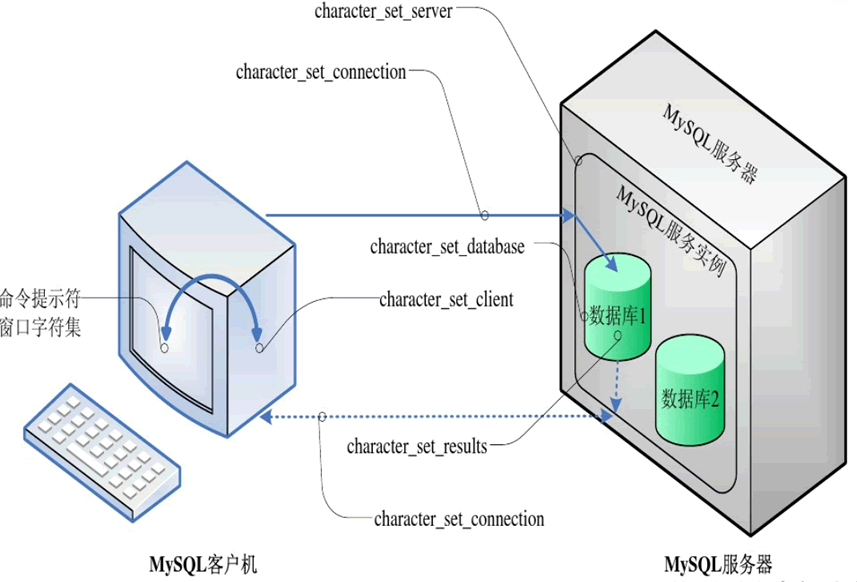

首页 > MySQL教程 > MySQL事务和字符集
MySQL字符集和校对规则详解
在讲解字符集和校对规则之前，我们先来简单了解一下字符、字符集和字符编码。
字符（Character）是计算机中字母、数字、符号的统称，一个字符可以是一个中文汉字、一个英文字母、一个阿拉伯数字、一个标点符号等。
计算机是以二进制的形式来存储数据的。平时我们在显示器上看到的数字、英文、标点符号、汉字等字符都是二进制数转换之后的结果。
字符集（Character set）定义了字符和二进制的对应关系，为字符分配了唯一的编号。常见的字符集有 ASCII、GBK、IOS-8859-1 等。
字符编码（Character encoding）也可以称为字集码，规定了如何将字符的编号存储到计算机中。
简单来说，字符集用来定义 MySQL 存储字符串的方式，校对规则用来定义 MySQL 比较字符串的方式。
而在 MySQL 中，字符集和校对规则是区分开的，必须设置字符集和校对规则。一般情况下，没有特殊需求，只设置其一即可。只设置字符集时，MySQL 会将校对规则设置为字符集中对应的默认校对规则。
可以通过
校对规则命令约定如下：
1）在命令提示符窗口（cmd 命令行）中执行 MySQL 命令或 sql 语句时，这些命令或语句从“命令提示符窗口字符集”转换为“character_set_client”定义的字符集。
2）使用命令提示符窗口成功连接 MySQL 服务器后，就建立了一条“数据通信链路”，MySQL 命令或 sql 语句沿着“数据链路”传向 MySQL 服务器，由 character_set_client 定义的字符集转换为 character_set_connection 定义的字符集。
3）MySQL 服务实例收到数据通信链路中的 MySQL 命令或 sql 语句后，将 MySQL 命令或 sql 语句从 character_set_connection 定义的字符集转换为 character_set_server 定义的字符集。
4）若 MySQL 命令或 sql 语句针对于某个数据库进行操作，此时将 MySQL 命令或 sql 语句从 character_set_server 定义的字符集转换为 character_set_database 定义的字符集。
5）MySQL 命令或 sql 语句执行结束后，将执行结果设置为 character_set_results 定义的字符集。
6）执行结果沿着打开的数据通信链路原路返回，将执行结果从 character_set_results 定义的字符集转换为 character_set_client 定义的字符集，最终转换为命令提示符窗口字符集，显示到命令提示符窗口中。
字符（Character）是计算机中字母、数字、符号的统称，一个字符可以是一个中文汉字、一个英文字母、一个阿拉伯数字、一个标点符号等。
计算机是以二进制的形式来存储数据的。平时我们在显示器上看到的数字、英文、标点符号、汉字等字符都是二进制数转换之后的结果。
字符集（Character set）定义了字符和二进制的对应关系，为字符分配了唯一的编号。常见的字符集有 ASCII、GBK、IOS-8859-1 等。
字符编码（Character encoding）也可以称为字集码，规定了如何将字符的编号存储到计算机中。
校对规则（Collation）也可以称为排序规则，是指在同一个字符集内字符之间的比较规则。字符集和校对规则是一对多的关系，每个字符集都有一个默认的校对规则。字符集和校对规则相辅相成，相互依赖关联。大部分字符集都只对应一种字符编码，例如：ASCII、IOS-8859-1、GB2312、GBK，都是既表示了字符集又表示了对应的字符编码。所以一般情况下，可以将两者视为同义词。Unicode 字符集除外，Unicode 有三种编码方案，即 UTF-8、UTF-16 和 UTF-32。最为常用的是 UTF-8 编码。
简单来说，字符集用来定义 MySQL 存储字符串的方式，校对规则用来定义 MySQL 比较字符串的方式。
有些数据库并没有清晰的区分开字符集和校对规则。例如，在 SQL Server 中创建数据库时，选择字符集就相当于选定了字符集和校对规则。想了解 ASCII、GB2312、GBK、Unicode 字符集的小伙伴，可点击以下链接阅读学习：
而在 MySQL 中，字符集和校对规则是区分开的，必须设置字符集和校对规则。一般情况下，没有特殊需求，只设置其一即可。只设置字符集时，MySQL 会将校对规则设置为字符集中对应的默认校对规则。
可以通过
SHOW VARIABLES LIKE 'character%';命令查看当前 MySQL 使用的字符集，命令和运行结果如下：
mysql> SHOW VARIABLES LIKE 'character%'; +--------------------------+---------------------------------------------------------+ | Variable_name | Value | +--------------------------+---------------------------------------------------------+ | character_set_client | gbk | | character_set_connection | gbk | | character_set_database | latin1 | | character_set_filesystem | binary | | character_set_results | gbk | | character_set_server | latin1 | | character_set_system | utf8 | | character_sets_dir | C:\Program Files\MySQL\MySQL Server 5.7\share\charsets\ | +--------------------------+---------------------------------------------------------+ 8 rows in set, 1 warning (0.01 sec)上述运行结果说明如下表所示：
| 名称 | 说明 |
|---|---|
| character_set_client | MySQL 客户端使用的字符集 |
| character_set_connection | 连接数据库时使用的字符集 |
| character_set_database | 创建数据库使用的字符集 |
| character_set_filesystem | MySQL 服务器文件系统使用的字符集，默认值为 binary，不做任何转换 |
| character_set_results | 数据库给客户端返回数据时使用的字符集 |
| character_set_server | MySQL 服务器使用的字符集，建议由系统自己管理，不要人为定义 |
| character_set_system | 数据库系统使用的字符集，默认值为 utf8，不需要设置 |
| character_sets_dir | 字符集的安装目录 |
可以通过乱码时，不需要关心 character_set_filesystem、character_set_system 和 character_sets_dir 这 3 个系统变量，它们不会影响乱码 。
SHOW VARIABLES LIKE 'collation\_%';命令查看当前 MySQL 使用的校对规则，命令和运行结果如下：
mysql> SHOW VARIABLES LIKE 'collation\_%'; +----------------------+-------------------+ | Variable_name | Value | +----------------------+-------------------+ | collation_connection | gbk_chinese_ci | | collation_database | latin1_swedish_ci | | collation_server | latin1_swedish_ci | +----------------------+-------------------+ 3 rows in set, 1 warning (0.01 sec)对上述运行结果说明如下：
- collation_connection：连接数据库时使用的校对规则
- collation_database：创建数据库时使用的校对规则
- collation_server：MySQL 服务器使用的校对规则
校对规则命令约定如下：
- 以校对规则所对应的字符集名开头
- 以国家名居中（或以 general 居中）
- 以 ci、cs 或 bin 结尾，ci 表示大小写不敏感，cs 表示大小写敏感，bin 表示按二进制编码值比较。
MySQL字符集的转换过程
MySQL 中字符集的转换过程如下：1）在命令提示符窗口（cmd 命令行）中执行 MySQL 命令或 sql 语句时，这些命令或语句从“命令提示符窗口字符集”转换为“character_set_client”定义的字符集。
2）使用命令提示符窗口成功连接 MySQL 服务器后，就建立了一条“数据通信链路”，MySQL 命令或 sql 语句沿着“数据链路”传向 MySQL 服务器，由 character_set_client 定义的字符集转换为 character_set_connection 定义的字符集。
3）MySQL 服务实例收到数据通信链路中的 MySQL 命令或 sql 语句后，将 MySQL 命令或 sql 语句从 character_set_connection 定义的字符集转换为 character_set_server 定义的字符集。
4）若 MySQL 命令或 sql 语句针对于某个数据库进行操作，此时将 MySQL 命令或 sql 语句从 character_set_server 定义的字符集转换为 character_set_database 定义的字符集。
5）MySQL 命令或 sql 语句执行结束后，将执行结果设置为 character_set_results 定义的字符集。
6）执行结果沿着打开的数据通信链路原路返回，将执行结果从 character_set_results 定义的字符集转换为 character_set_client 定义的字符集，最终转换为命令提示符窗口字符集，显示到命令提示符窗口中。

关注公众号「站长严长生」，在手机上阅读所有教程，随时随地都能学习。内含一款搜索神器，免费下载全网书籍和视频。

微信扫码关注公众号